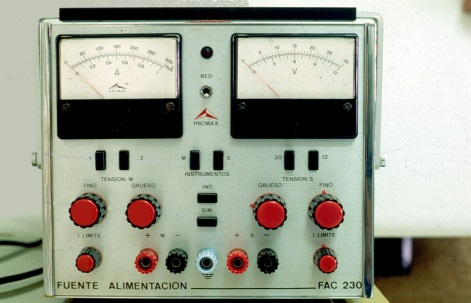
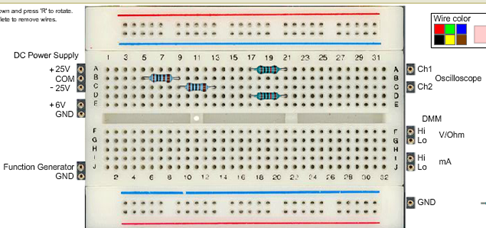

INTENTSITATEA, TENTSIOA ETA ERRESISTENTZIA (3/3)
3. NEURTZEKO TRESNAK
IKASI:
Zirkuitu elektrikoekin lan egiteko orduan, neurtzeko oso erabilgarriak diren 3 tresna daude. Polimetroa, testerra edo multimetroa neurketa-tresnarik ezagunena eta erabiliena da, eta zirkuituaren tentsioa, intentsitatea eta erresistentzia neurtzeko balio du. Gainera, korronte etengabea eta korronte alternoa neurtzeko balio du. Tresna hau analogikoa izan daiteke, eta bertan, irakurketa orratz baten bidez edo modu digitalean egiten da, eta balioa pantailan agertzen da.
lNTEF-MECen irudien bankutik hartutako irudiak. (CC BY-NC-SA 3.0)
 Erabilera-arauak:
Erabilera-arauak:
- Jakin zer neurtu nahi den eta zein korronte mota den (alternoa edo zuzena). Korronte zuzenaren kasuan, polaritatea aukeratu behar da.
- Aukeratu eskala. Hasi beti baliorik altuenetik, gainkargak saihesteko.
- Jarri zuzen polimetroa zirkuituan.
- Erresistentziak neurtzeko, ez da tentsiorik egon behar zirkuituan.
- Zirkuitu bateko tentsioa paraleloan neurtzen da beti.
- Zirkuitu bateko intentsitatea seriean neurtzen da.
Ikusi testerra edo polimetroa zelan erabili azaltzen duten bideo hauek:

Halaber, voltmetroa eta amperemetroa ere erabiltzen dira. Voltmetroa zirkuitu elektriko baten bi punturen artean dagoen potentzia aldea neurtzeko tresna da. Amperemetroa zirkuitu elektriko batean dabilen korrontearen intentsitatea neurtzeko tresna da. Eskuineko irudian, bi tresnen adibidea ikus daiteke, formatu analogikoan.
lNTEF-MECen irudien bankutik hartutako irudiak. (CC BY-NC-SA 3.0)
 JARRI PRAKTIKAN:
JARRI PRAKTIKAN:
VISIR, urrutiko laborategia:
Multimetroa erabiltzen ikasteko, teknologiako laborategiko multimetroa erabil dezakegu, eta, bestalde, urrutiko laborategi baten bidez, esperimentazio bat egin dezakegu.
VISIRen irudia,WebLab Deusto.
Jarraian, zenbait ariketa jarri ditugu, eskolako laborategian edo, bestela, etxean egiteko, WebLab Deusto urrutiko laborategiaren bidez.
Ariketak hemen aurki ditzakezu.